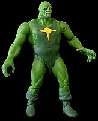

|
This custom was made from a ToyBiz Giant figure with Ripped and Ruthless Stone
Cold head. It was made as part of the Sinister Six Masters of Evil entry for Custom Con 7.
I used flourescent (neon) paints for the skintones. A black light makes the figure glow. This picture was taken in partial black light and natural light for a subdued glow. Point your mouse at the picture below to see the effect in action!

|